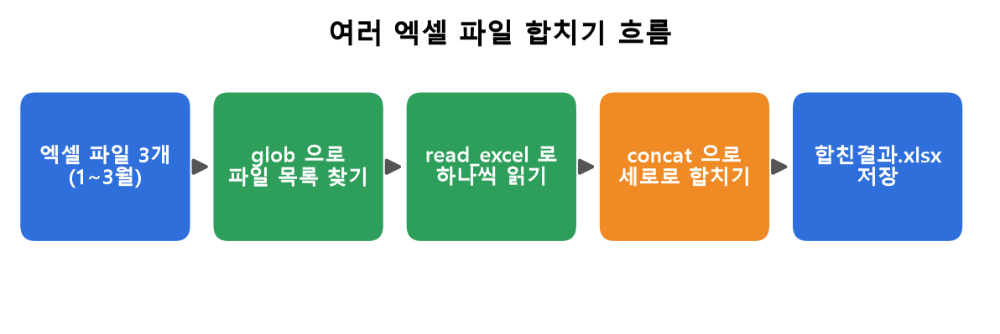
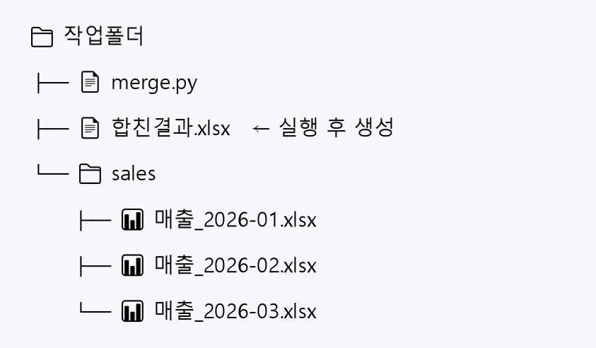
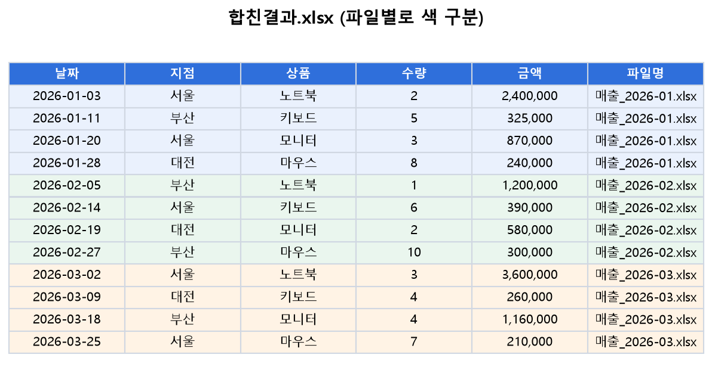
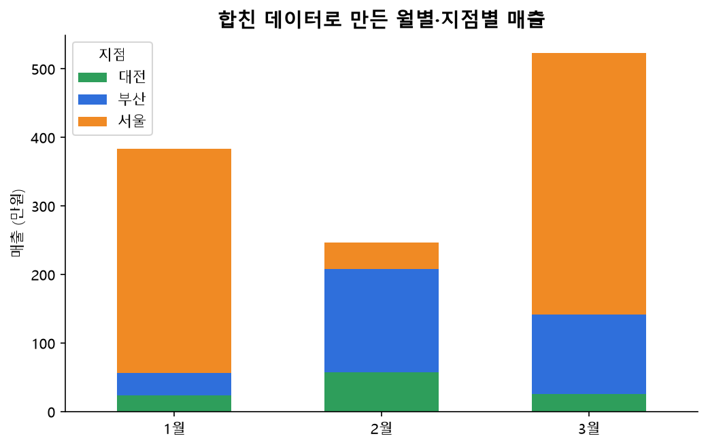

작성일 2026.11.13 · 난이도 ★☆☆ · 준비물: Python, pandas, openpyxl
월말마다 반복되는 "복사 → 붙여넣기 → 복사 → 붙여넣기…"
매달 만들어지는 월별 매출 파일, 지점마다 따로 받는 보고서 파일… 이런 엑셀 파일을 하나로 합쳐야 할 때가 있습니다. 파일이 3개면 손으로 해도 되지만, 12개, 50개가 되면 복사·붙여넣기만으로 하루가 지나갑니다. 게다가 한 번 실수하면 어디서 빠졌는지 찾기도 어렵습니다.
이번 글에서는 파이썬 pandas로 폴더 안의 엑셀 파일을 전부 읽어 하나의 파일로 합치는 방법을 20줄도 안 되는 코드로 알아보겠습니다.
반복 업무는 코드에게 맡기고 우리는 결과를 분석하는 데 시간을 쓰자
동작 순서는 단순합니다. 폴더에서 엑셀 파일 목록을 찾고, 하나씩 읽어서 리스트에 담은 뒤, 세로로 이어 붙여 저장합니다.

엑셀을 읽고 쓰려면 pandas와 openpyxl이 필요합니다. 명령 프롬프트(터미널)에서 설치합니다.
pip install pandas openpyxl예제에서는 sales 폴더에 1~3월 매출 파일 3개가 들어 있다고 가정합니다. 세 파일 모두 열 구성이 같습니다(날짜, 지점, 상품, 수량, 금액).

merge.py라는 이름으로 저장하세요.
import glob
import os
import pandas as pd
folder = "sales" # 엑셀 파일이 들어 있는 폴더
files = sorted(glob.glob(os.path.join(folder, "*.xlsx")))
if not files:
raise SystemExit("합칠 엑셀 파일이 없습니다.")
frames = []
for path in files:
df = pd.read_excel(path) # 파일 하나 읽기
df["파일명"] = os.path.basename(path) # 어느 파일의 데이터인지 표시
frames.append(df)
print(f"{os.path.basename(path)} : {len(df)}행")
merged = pd.concat(frames, ignore_index=True) # 세로로 이어 붙이기
merged.to_excel("합친결과.xlsx", index=False)
print(f"\n총 {len(files)}개 파일, {len(merged)}행을 합쳤습니다.")| 코드 | 설명 |
|---|---|
glob.glob(...) |
sales 폴더에서 .xlsx로 끝나는 파일 경로를 모두 찾습니다. |
sorted(...) |
파일 순서를 이름순(1월 → 2월 → 3월)으로 맞춥니다. 안 쓰면 순서가 보장되지 않습니다. |
pd.read_excel(path) |
엑셀 파일 하나를 표(DataFrame)로 읽습니다. |
df["파일명"] = ... |
합친 뒤에도 원본을 알 수 있도록 출처 열을 추가합니다. 데이터 검증에 큰 도움이 됩니다. |
pd.concat(frames, ignore_index=True) |
표들을 세로로 이어 붙이고, 행 번호를 0부터 새로 매깁니다. |
to_excel(..., index=False) |
결과를 엑셀로 저장합니다. index=False는 불필요한 행 번호 열을 빼줍니다. |
터미널에서 merge.py가 있는 폴더로 이동한 뒤 실행합니다.
python merge.py매출_2026-01.xlsx : 4행
매출_2026-02.xlsx : 4행
매출_2026-03.xlsx : 4행
총 3개 파일, 12행을 합쳤습니다.4행씩 3개 파일이 12행 하나로 합쳐졌습니다. 생성된 합친결과.xlsx를 열어보면 아래와 같습니다. (보기 좋도록 파일별로 색을 구분해 두었습니다.)

한 번 합쳐 두면 분석은 쉬워집니다. 월별·지점별 매출을 집계해 누적 막대그래프로 그려 보겠습니다. 위 코드의 merged 뒤에 이어서 쓰면 됩니다.
import matplotlib.pyplot as plt
plt.rcParams["font.family"] = "Malgun Gothic" # 한글 폰트 (Windows)
merged["월"] = pd.to_datetime(merged["날짜"]).dt.month.astype(str) + "월"
pv = merged.pivot_table(index="월", columns="지점", values="금액", aggfunc="sum")
(pv / 10000).plot(kind="bar", stacked=True)
plt.ylabel("매출 (만원)")
plt.show()필요한 라이브러리는 pip install matplotlib으로 설치합니다.

그래프를 보니 2월은 매출이 가장 낮고, 3월은 서울 지점이 크게 늘었다는 것을 바로 알 수 있습니다. 파일 3개를 눈으로 비교했다면 놓쳤을 내용입니다.
concat은 열 이름을 기준으로 합칩니다. 어떤 파일은 "금액", 다른 파일은 "매출액"이라면 빈 칸(NaN)이 가득한 열이 생깁니다. 합치기 전에 이름을 통일하세요.
df = pd.read_excel(path)
df = df.rename(columns={"매출액": "금액"})예전 형식인 .xls는 openpyxl이 읽지 못합니다. pip install xlrd를 설치하거나, 엑셀에서 .xlsx로 다시 저장한 뒤 사용하세요.
sheet_name=None을 주면 모든 시트를 딕셔너리로 읽어옵니다.
sheets = pd.read_excel(path, sheet_name=None) # {"시트이름": DataFrame, ...}
for name, df in sheets.items():
df["시트명"] = name
frames.append(df)합친결과.xlsx)이 읽는 폴더 안에 있으면 다음 실행 때 결과가 다시 합쳐지니, 읽는 폴더와 저장 위치를 분리하세요. 이 예제에서는 결과를 sales 폴더 밖에 저장하므로 안전합니다.
glob으로 폴더의 엑셀 파일 목록을 가져온다.read_excel로 하나씩 읽고, 출처 열(파일명)을 붙여 둔다.concat으로 세로로 합치고 to_excel로 저장한다.다음 글에서는 합쳐진 엑셀에 조건에 따라 서식(배경색)을 자동으로 입히는 방법을 다뤄 보겠습니다. 엑셀 파일을 만들고 저장하는 기본 방법이 궁금하다면 이전 글 파이썬으로 텍스트 및 엑셀 파일 불러오기도 참고해 주세요.
테스트 환경: Python 3.14, pandas 3.1, openpyxl 3.1, Windows 11